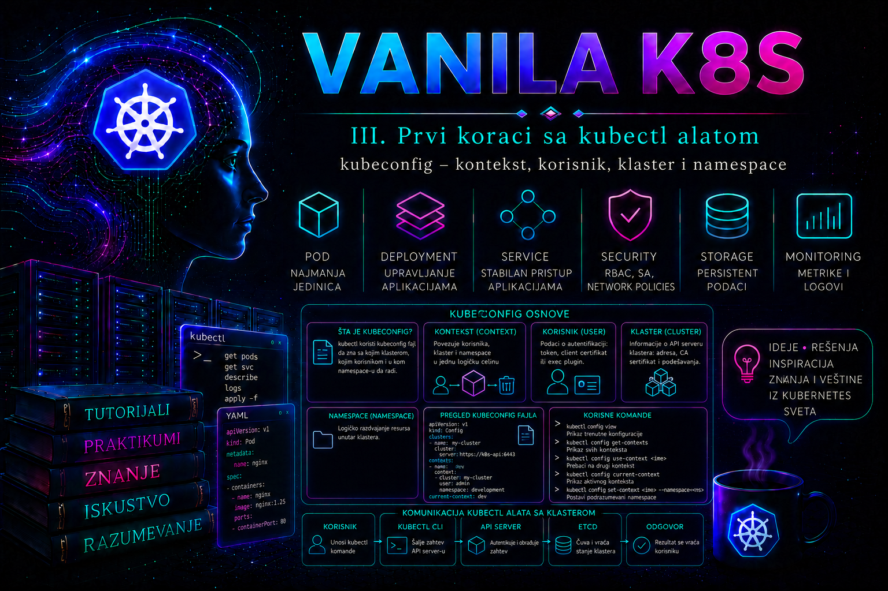

Vanilla Kubernetes

Komanda kubectl ne zna unapred gde se Kubernetes klaster nalazi, kojem API serveru treba da se obrati, kojim identitetom treba da se predstavi niti u kom namespace-u administrator namerava da radi. Te informacije dobija iz kubeconfig konfiguracije. Kubeconfig zato nije samo pomoćni fajl za lakše korišćenje komandne linije, već operativna mapa pristupa Kubernetes okruženjima: povezuje adresu klastera, podatke za proveru identiteta, podrazumevani namespace i izabrani kontekst rada.
U malom laboratorijskom okruženju kubeconfig često sadrži samo jedan klaster i jedan administratorski identitet. U enterprise sistemu isti administrator može imati pristup razvojnom, testnom i produkcionom klasteru, različite uloge u svakom od njih i više konteksta za pojedinačne namespace-ove. Tada pogrešan izbor konteksta više nije bezazlena greška. Komanda namenjena razvojnom okruženju može biti izvršena nad produkcijom, a privilegovani identitet može biti korišćen tamo gde bi bio dovoljan namespace ograničen nalog.
Uloga kubeconfig konfiguracije
Kubeconfig je konfiguracioni dokument koji Kubernetes klijentski alati koriste da bi izgradili vezu prema API serveru. Njegov standardni format je YAML, a ključni podaci organizovani su u četiri logičke celine: clusters, users, contexts i current-context. Naziv „user” u kubeconfig strukturi predstavlja lokalni naziv skupa autentikacionih podataka; on ne mora odgovarati objektu koji postoji u Kubernetes API-ju, jer Kubernetes nema opšti ugrađeni API objekat tipa User.
Kada administrator izvrši komandu, kubectl najpre učitava kubeconfig, pronalazi aktivni kontekst, iz tog konteksta dobija naziv klastera i korisnika, zatim učitava pripadajuću adresu API servera, podatke za proveru serverskog TLS sertifikata i mehanizam autentikacije. Namespace iz konteksta koristi se kao podrazumevani prostor imena za komande koje rade sa namespaced resursima. Nakon toga zahtev prolazi kroz autentikaciju, autorizaciju i admission kontrolu na API serveru.
Kubeconfig ne dodeljuje privilegije. On samo određuje kojim identitetom klijent pokušava da pristupi klasteru. Stvarne dozvole zavise od autentikacionog mehanizma i Kubernetes autorizacije, najčešće RBAC pravila. Činjenica da je neki kontekst prisutan u fajlu ne znači da identitet ima pravo da čita ili menja resurse.
Klaster, korisnik, kontekst i namespace
| Element | Sadržaj | Administratorski značaj |
|---|---|---|
cluster |
Adresa API servera, CA podaci i opcije TLS veze | Određuje kojem kontrolnom nivou se klijent obraća i kako proverava njegov identitet |
user |
Klijentski sertifikat, token ili konfiguracija eksternog credential plugina | Određuje kojim identitetom se zahtev autentikuje |
context |
Veza između jednog klastera, jednog korisnika i opcionog namespace-a | Predstavlja konkretnu operativnu ulogu i cilj rada |
current-context |
Naziv trenutno aktivnog konteksta | Određuje podrazumevani cilj narednih komandi |
namespace |
Podrazumevani namespace unutar konteksta | Smanjuje potrebu za zastavicom -n, ali ne ograničava privilegije identiteta |
Jedan zapis u sekciji clusters može koristiti više konteksta. Na primer, isti produkcioni klaster može imati kontekst za čitanje resursa u namespace-u payments-prod i poseban, strože kontrolisan kontekst za klastersku administraciju. Isto tako, jedan korisnički zapis može biti povezan sa više klastera, pod uslovom da je odgovarajući identitet prihvaćen u svakom od njih.
Namespace upisan u kontekst predstavlja samo podrazumevanu vrednost. Administrator ga može privremeno nadjačati zastavicom --namespace ili -n. Ako identitet ima šira ovlašćenja, namespace u kontekstu ga neće sprečiti da pristupi drugim namespace-ovima. Zbog toga se bezbednosna izolacija ostvaruje RBAC pravilima, a ne oslanjanjem na podrazumevani namespace.
Struktura kubeconfig fajla
Sledeći skraćeni primer prikazuje strukturu kubeconfig dokumenta za referentni klaster k8s-prod-eu1. Prikazane vrednosti sertifikata i ključeva su bezbedne zamenske oznake i ne predstavljaju stvarne tajne.
apiVersion: v1
kind: Config
clusters:
- name: k8s-prod-eu1
cluster:
server: https://api.k8s-prod-eu1.example.internal:6443
certificate-authority: /home/admin/.kube/pki/k8s-prod-eu1-ca.crt
users:
- name: natasa-payments-operator
user:
client-certificate: /home/admin/.kube/pki/natasa-payments-operator.crt
client-key: /home/admin/.kube/pki/natasa-payments-operator.key
contexts:
- name: k8s-prod-eu1-payments
context:
cluster: k8s-prod-eu1
user: natasa-payments-operator
namespace: payments-prod
current-context: k8s-prod-eu1-payments
preferences: {}
Polje server mora sadržati HTTPS adresu Kubernetes API servera ili odgovarajućeg kontrolisanog endpointa ispred njega. Polje certificate-authority navodi CA sertifikat kojim klijent proverava sertifikat servera. Alternativno se CA sadržaj može ugraditi kao Base64 kodirana vrednost u polju certificate-authority-data. Ugradnja olakšava prenos jednog fajla, dok spoljne putanje omogućavaju odvojeno upravljanje sertifikatima. Izbor mora biti standardizovan na nivou organizacije.
Opciju insecure-skip-tls-verify: true ne treba koristiti kao trajno rešenje. Ona onemogućava proveru identiteta API servera i otvara mogućnost presretanja veze. Prihvatljiva je samo kao kratkotrajna dijagnostička mera u kontrolisanom laboratorijskom okruženju, uz dokumentovan razlog i obavezno uklanjanje nakon ispravke CA lanca, DNS imena ili serverskog sertifikata.
Lokacija, izbor i redosled učitavanja konfiguracije
Na Linux sistemima podrazumevana lokacija je $HOME/.kube/config. Na Windows sistemima koristi se odgovarajuća korisnička putanja unutar direktorijuma .kube. Administrator ne treba da pretpostavi da je podrazumevani fajl uvek aktivan, jer izbor može biti promenjen zastavicom --kubeconfig ili promenljivom okruženja KUBECONFIG.
Ako je navedena zastavica --kubeconfig, koristi se tačno određeni fajl i ne obavlja se spajanje sa drugim fajlovima. Ako je postavljena promenljiva KUBECONFIG, može sadržati listu putanja razdvojenih separatorom karakterističnim za operativni sistem. Konfiguracije se tada logički spajaju prema pravilima učitavanja. Ako nijedno od toga nije zadato, koristi se podrazumevani fajl.
echo "${KUBECONFIG:-nije postavljen}"
kubectl config current-context
kubectl config view --minify
kubectl config view --raw
Komanda kubectl config view --minify prikazuje samo podatke povezane sa trenutno aktivnim kontekstom i pogodna je za svakodnevnu proveru. Opcija --raw može prikazati osetljive podatke koji su inače redigovani, uključujući tokene, sertifikate ili ključeve. Ne treba je koristiti u snimcima ekrana, tiketima, terminalskim transkriptima, deljenim CI logovima ili dokumentaciji promene.
Spajanje više kubeconfig fajlova korisno je kada administrator dobija zasebne konfiguracije za različite klastere, ali uvodi rizik od kolizije imena. Ako dva fajla imaju zapis istog naziva, rezultat može zavisiti od redosleda i pravila spajanja. Zato nazivi treba da budu globalno prepoznatljivi, na primer k8s-dev-eu1, k8s-test-eu1 i k8s-prod-eu1, umesto generičkih naziva cluster, admin ili default.
Upravljanje kontekstima pomoću kubectl config komandi
Kubeconfig se može uređivati ručno, ali je za rutinske promene bezbednije koristiti komande iz grupe kubectl config. One proveravaju osnovnu strukturu i smanjuju mogućnost greške u uvlačenju YAML-a. Ipak, administrator mora znati koji fajl menja. Svaka komanda može dobiti zastavicu --kubeconfig, čime se izbegava nenamerna promena podrazumevane konfiguracije.
kubectl config get-clusters
kubectl config get-users
kubectl config get-contexts
kubectl config current-context
kubectl config view --minify
Komanda get-contexts prikazuje kontekste, njihove klastere, korisnike i namespace-ove. Zvezdica u izlazu označava aktivni kontekst. Pre svake produkcione promene administrator treba da proveri najmanje aktivni kontekst, adresu servera i efektivni namespace.
kubectl config use-context k8s-prod-eu1-payments
kubectl config set-context --current --namespace=payments-prod
kubectl config rename-context old-context-name k8s-prod-eu1-payments
use-context menja polje current-context. Komanda ne testira nužno da li je API server dostupan niti da li su kredencijali važeći, pa nakon promene treba izvršiti funkcionalnu proveru. set-context --current --namespace=... menja podrazumevani namespace aktivnog konteksta. Ako se isti kontekst koristi za različite zadatke, ovakva promena može biti zaboravljena; zato su u produkciji često bezbedniji zasebno imenovani konteksti za svaki važan namespace.
Autentikacioni podaci i zaštita tajni
Kubeconfig može sadržati reference na klijentski sertifikat i privatni ključ, bearer token ili konfiguraciju exec credential plugina koji dinamički pribavlja kratkotrajne podatke. Savremena enterprise okruženja često koriste eksterni identitet, OIDC ili vendor CLI dodatak umesto dugotrajnih statičkih tokena. Na taj način se kredencijali mogu obnavljati, opozivati i vezivati za centralni sistem identiteta.
Privatni ključevi i tokeni u kubeconfig fajlu moraju se tretirati kao tajne. Fajl ne treba slati elektronskom poštom, čuvati u Git repozitorijumu, unositi u javni ticket niti kopirati u direktorijum dostupan drugim korisnicima. Na Linux radnoj stanici preporučene dozvole su da direktorijumu može pristupiti samo vlasnik, a da kubeconfig i privatni ključevi budu čitljivi samo vlasniku.
chmod 700 "$HOME/.kube"
chmod 600 "$HOME/.kube/config"
chmod 700 "$HOME/.kube/pki"
chmod 600 "$HOME/.kube/pki/"*.keyOve dozvole štite lokalni fajl, ali ne rešavaju kompromitovan korisnički nalog ili uređaj. Enterprise radna stanica treba da koristi šifrovan disk, kontrolisano upravljanje privilegijama, zaštitu endpointa i proceduru za opoziv sertifikata ili sesija. Kubeconfig ne treba deliti između zaposlenih. Svaki administrator mora koristiti sopstveni identitet radi audita i odgovornosti.
Kubeconfig sa privilegijama cluster-admin ne treba koristiti za svakodnevni rad. Administratorske operacije treba razdvojiti od rutinskog čitanja i namespace upravljanja. Privilegovani kontekst aktivira se samo za odobrenu promenu, nakon čega se administrator vraća na ograničeni kontekst.
Provera identiteta, namespace-a i efektivnih prava
Uspešna TLS veza i autentikacija ne znače da identitet ima potrebna ovlašćenja. Najvažnija provera pre rada jeste utvrđivanje aktivnog konteksta i efektivnih RBAC dozvola. Komanda kubectl auth can-i šalje autorizacioni upit API serveru i daje odgovor za konkretnu radnju.
kubectl config current-context
kubectl config view --minify -o jsonpath='{.clusters[0].cluster.server}{"\n"}'
kubectl config view --minify -o jsonpath='{..namespace}{"\n"}'
kubectl auth can-i get deployments
kubectl auth can-i patch deployments
kubectl auth can-i delete deployments
kubectl auth can-i --list
Izlaz yes potvrđuje da trenutni identitet može izvršiti traženu radnju u efektivnom namespace-u. Izlaz no nije kvar kubeconfig fajla ako autentikacija funkcioniše; on najčešće znači da RBAC pravila ne dozvoljavaju operaciju. Poruka Unauthorized ukazuje da autentikacija nije uspela, dok Forbidden obično znači da je identitet prepoznat, ali nije autorizovan.
Za razlikovanje problema korisno je izvršiti komandu sa većom količinom klijentskih dijagnostičkih informacija:
kubectl --v=6 get namespace payments-prodViši nivo detalja prikazuje tok klijentskog zahteva, odabir servera i HTTP odgovor. Izlaz može sadržati interne adrese i druge operativne informacije, pa ga treba čuvati samo u zaštićenim dijagnostičkim zapisima. Još viši nivoi mogu otkriti dodatne detalje i ne treba ih nekontrolisano objavljivati.
Bezbednosni model kubeconfig fajla i nepoverljive konfiguracije
Kubeconfig nije pasivan spisak adresa. Pored putanja do lokalnih fajlova može sadržati exec konfiguraciju koja pokreće spoljašnji program radi pribavljanja kredencijala, kao i reference koje klijentski alat učitava sa radne stanice. Zbog toga se kubeconfig dobijen iz nepoznatog ili neproverenog izvora tretira kao potencijalno izvršiv i opasan sadržaj, slično shell skripti. Ne treba ga odmah proslediti komandi kubectl, spajati sa ličnom konfiguracijom niti otvarati alatom koji automatski izvršava credential plugin.
Bezbedan prijem podrazumeva proveru porekla i integriteta van istog kanala kojim je fajl dostavljen, čitanje običnim tekstualnim preglednikom, proveru polja server, certificate-authority*, client-*, token*, auth-provider, exec, proxy-url i svih putanja. Posebno se proverava da li exec.command poziva odobren binarni fajl sa očekivane lokacije, koje argumente i promenljive okruženja prima i da li je uključeno interaktivno izvršavanje. Tek potom se konfiguracija ispituje iz izolovanog korisničkog okruženja sa najmanjim lokalnim i klasterskim privilegijama.
exec credential plugin treba da vraća objekat ExecCredential odgovarajuće API verzije i kratkotrajni token ili klijentski sertifikat. Komanda plugina mora biti instalirana i pronađena u kontrolisanom PATH-u. Greška „executable not found”, neusklađena apiVersion, istekli rezultat ili neuspešna prijava nisu razlog da se statički token upiše u fajl; ispravlja se instalacija, verzija plugina, sesija kod identity providera ili organizaciona konfiguracija.
Spajanje, prenosiva kopija i životni ciklus konfiguracije
Kod promenljive KUBECONFIG putanje se na Linuxu i macOS-u razdvajaju dvotačkom, a na Windowsu tačka-zarezom. Spajanje nije prosto „poslednja vrednost pobeđuje”: postojeće vrednosti i mapirani zapisi rešavaju se prema pravilima učitavanja, a izmene se upisuju u fajl koji je definisao odgovarajuću stavku; nova stavka se upisuje u prvi postojeći fajl u lancu. Zbog toga administrator pre svake state-changing kubectl config komande mora znati i logički rezultat spajanja i fizički fajl koji će biti izmenjen. Kada je cilj jednoznačna promena, eksplicitni --kubeconfig=/tačna/putanja je bezbedniji izbor.
export KUBECONFIG="$HOME/.kube/dev.conf:$HOME/.kube/prod.conf"
kubectl config view
kubectl config get-contexts
# Kreiranje samostalne kopije menja lokalni fajl, ali ne stanje klastera.
umask 077
kubectl config view --merge --flatten \
>"$HOME/.kube/merged-portable.conf"
chmod 600 "$HOME/.kube/merged-portable.conf"
kubectl --kubeconfig="$HOME/.kube/merged-portable.conf" config get-contexts
Opcija --flatten ugrađuje podatke iz referenciranih sertifikacionih fajlova i pravi samostalniju konfiguraciju. To olakšava kontrolisani prenos, ali povećava osetljivost izlaznog fajla: privatni ključevi i sertifikati mogu završiti neposredno u YAML-u. Prenosiva kopija zato dobija dozvolu 600, ne prikazuje se u terminalskom transkriptu, ima odobren rok čuvanja i briše se kada svrha prestane. --minify ograničava prikaz na aktivni kontekst, dok --raw otkriva sirove osetljive vrednosti; nijedna opcija sama po sebi ne uklanja privilegije kredencijala.
Tipične greške i njihove posledice
- Pogrešan aktivni kontekst. Administrator izvršava komandu nad drugim klasterom od planiranog. Posledica može biti promena ili brisanje produkcionih resursa. Pre rizičnih operacija proveravaju se kontekst, API endpoint, namespace i identitet.
- Generički nazivi konteksta. Nazivi kao
adminilidefaultne otkrivaju okruženje. Standard imena treba da sadrži klaster, okruženje, ulogu ili namespace. - Oslanjanje na namespace kao bezbednosnu granicu. Podrazumevani namespace ne ograničava RBAC prava. Identitet sa klasterskim privilegijama i dalje može menjati druge namespace-ove.
- Trajno isključena TLS provera.
insecure-skip-tls-verifyuklanja zaštitu od lažnog API servera. Potrebno je ispraviti CA sertifikat, DNS ili SAN vrednosti u sertifikatu. - Deljeni administratorski kubeconfig. Gubi se individualna sledljivost, a opoziv pristupa jednoj osobi postaje težak. Svaki korisnik mora imati sopstveni identitet.
- Kubeconfig u Git repozitorijumu. Čak i privatni repozitorijum nije odgovarajuće skladište za tokene i privatne ključeve. Kompromitovani podaci moraju se odmah opozvati, a ne samo ukloniti iz poslednjeg commita.
- Izmena bez rezervne kopije. Pogrešno brisanje konteksta ili korisničkog zapisa može prekinuti pristup. Pre promene čuva se zaštićena kopija i proverava njena sintaksa.
- Korišćenje zastarelih kredencijala. Istekli klijentski sertifikat ili nevažeći token daje greške autentikacije. Administrator proverava rok sertifikata ili ponavlja prijavu preko odobrenog credential plugina.
Integrisani praktikum – uvođenje bezbednog produkcionog konteksta za namespace operatora
Poslovni i tehnički kontekst. Tim za aplikaciju za plaćanja dobio je pravo da nadgleda i ažurira workload resurse u namespace-u payments-prod na klasteru k8s-prod-eu1. Platformski tim je korisniku izdao klijentski sertifikat, privatni ključ i CA sertifikat preko odobrenog bezbednog kanala. Potrebno je napraviti odvojeni kubeconfig koji neće menjati postojeći administratorski fajl, proveriti TLS vezu, identitet, namespace i RBAC ograničenja, a zatim dokumentovati rezultat.
Cilj. Napraviti fajl /home/admin/.kube/k8s-prod-eu1-payments.conf sa kontekstom k8s-prod-eu1-payments, korisnikom natasa-payments-operator, klasterom k8s-prod-eu1 i podrazumevanim namespace-om payments-prod. Identitet mora moći da čita i ažurira Deployment resurse u tom namespace-u, ali ne sme moći da briše namespace niti čita Secrets.
Referentno okruženje. Administratorska Linux radna stanica koristi kubectl kompatibilan sa Kubernetes klasterom, interni DNS razrešava api.k8s-prod-eu1.example.internal, a mrežna pravila dozvoljavaju TCP pristup portu 6443. Sertifikati su već dostavljeni u privremeni zaštićeni direktorijum /home/admin/secure-transfer.
Potrebna prava. Lokalni korisnik mora imati pravo pisanja u sopstveni direktorijum /home/admin/.kube. Na Kubernetes strani identitet iz klijentskog sertifikata mora već imati odgovarajuću RoleBinding ili ClusterRoleBinding vezu. Za izradu kubeconfig fajla nisu potrebna lokalna root prava niti Kubernetes privilegije cluster-admin.
Preduslovi. Postoje fajlovi k8s-prod-eu1-ca.crt, natasa-payments-operator.crt i natasa-payments-operator.key u direktorijumu /home/admin/secure-transfer. Privatni ključ nije zaštićen lozinkom koju bi trebalo unositi u automatizaciji, a njegov prenos je evidentiran u sistemu za upravljanje promenama.
-
Proveriti postojeće lokalno stanje bez promene konfiguracije.
Pre izrade novog fajla proverava se instalirana verzija klijenta, postojeći aktivni kontekst i eventualno postavljena promenljiva
KUBECONFIG. Cilj je da se spreči nenamerna izmena konfiguracije koja se trenutno koristi.
Validacija: Verzija klijenta mora biti podržana za ciljnu verziju klastera. Postojeći kontekst se beleži u tiket promene. Nijedna naredna komanda u praktikumu neće menjati podrazumevanikubectl version --client printf 'KUBECONFIG=%s\n' "${KUBECONFIG:-nije postavljen}" kubectl config current-context kubectl config get-contexts$HOME/.kube/config. -
Proveriti mrežu, DNS i TLS endpoint pre unosa kredencijala.
Time se razlikuje problem mrežne dostupnosti od kasnijeg problema autentikacije.
Validacija: DNS mora vratiti odobrenu internu adresu, TCP test mora završiti bez greške, a OpenSSL izlaz mora sadržatigetent hosts api.k8s-prod-eu1.example.internal timeout 5 bash -c '</dev/tcp/api.k8s-prod-eu1.example.internal/6443' openssl s_client \ -connect api.k8s-prod-eu1.example.internal:6443 \ -servername api.k8s-prod-eu1.example.internal \ -CAfile /home/admin/secure-transfer/k8s-prod-eu1-ca.crt \ -verify_return_error </dev/nullVerify return code: 0 (ok). Greška u ovom koraku eskalira se mrežnom ili platformskom timu pre nastavka. -
Proveriti dostavljene sertifikate i privatni ključ.
Administrator proverava rok važenja, subject, issuer, namenu klijentskog sertifikata i podudaranje javnog ključa sertifikata sa privatnim ključem. Sadržaj privatnog ključa se ne prikazuje.
Validacija: Sertifikat ne sme biti istekao, treba da bude namenjen klijentskoj autentikaciji, a dve SHA-256 vrednosti javnog ključa moraju biti identične. Ako se razlikuju, sertifikat i ključ nisu par i ne smeju se koristiti.openssl x509 \ -in /home/admin/secure-transfer/natasa-payments-operator.crt \ -noout -subject -issuer -dates -ext extendedKeyUsage openssl x509 \ -in /home/admin/secure-transfer/natasa-payments-operator.crt \ -pubkey -noout | sha256sum openssl pkey \ -in /home/admin/secure-transfer/natasa-payments-operator.key \ -pubout | sha256sum -
Napraviti zaštićene direktorijume i premestiti materijal.
Sertifikati se smeštaju u namenski direktorijum, a privatni ključ dobija dozvolu čitanja i pisanja samo za vlasnika.
Validacija:install -d -m 700 /home/admin/.kube install -d -m 700 /home/admin/.kube/pki install -m 644 \ /home/admin/secure-transfer/k8s-prod-eu1-ca.crt /home/admin/.kube/pki/k8s-prod-eu1-ca.crt install -m 644 \ /home/admin/secure-transfer/natasa-payments-operator.crt /home/admin/.kube/pki/natasa-payments-operator.crt install -m 600 \ /home/admin/secure-transfer/natasa-payments-operator.key /home/admin/.kube/pki/natasa-payments-operator.key
Direktorijumi moraju imati režimstat -c '%a %U:%G %n' \ /home/admin/.kube /home/admin/.kube/pki /home/admin/.kube/pki/k8s-prod-eu1-ca.crt /home/admin/.kube/pki/natasa-payments-operator.crt /home/admin/.kube/pki/natasa-payments-operator.key700, privatni ključ600, a vlasnik mora biti lokalni korisnikadmin. -
Napraviti novu, praznu kubeconfig konfiguraciju.
Koristi se zaseban fajl kako postojeći administratorski konteksti ne bi bili promenjeni. Privremeni
umask 077obezbeđuje restriktivne dozvole pri kreiranju fajla.
Validacija:umask 077 KCFG=/home/admin/.kube/k8s-prod-eu1-payments.conf : > "$KCFG" chmod 600 "$KCFG"
Očekuje se režimstat -c '%a %U:%G %n' "$KCFG" test ! -s "$KCFG" && echo "Prazan fajl je spreman"600i potvrda da je fajl prazan pre kontrolisanog upisa. -
Definisati zapis klastera.
Komanda upisuje adresu API servera i putanju do CA sertifikata. TLS provera se ne isključuje.
Validacija:kubectl --kubeconfig="$KCFG" config set-cluster k8s-prod-eu1 \ --server=https://api.k8s-prod-eu1.example.internal:6443 \ --certificate-authority=/home/admin/.kube/pki/k8s-prod-eu1-ca.crt \ --embed-certs=false
Izlaz mora sadržati samo očekivani naziv klastera i tačan HTTPS endpoint. U konfiguraciji ne sme postojatikubectl --kubeconfig="$KCFG" config get-clusters kubectl --kubeconfig="$KCFG" config view \ -o jsonpath='{.clusters[?(@.name=="k8s-prod-eu1")].cluster.server}{"\n"}'insecure-skip-tls-verify: true. -
Definisati korisnički zapis.
Lokalni naziv
natasa-payments-operatorpovezuje se sa klijentskim sertifikatom i privatnim ključem. Ovim se ne kreira Kubernetes korisnik niti dodeljuju RBAC prava.
Validacija:kubectl --kubeconfig="$KCFG" config set-credentials natasa-payments-operator \ --client-certificate=/home/admin/.kube/pki/natasa-payments-operator.crt \ --client-key=/home/admin/.kube/pki/natasa-payments-operator.key \ --embed-certs=false
Mora biti prikazan očekivani naziv korisničkog zapisa i tačna putanja do klijentskog sertifikata.kubectl --kubeconfig="$KCFG" config get-users kubectl --kubeconfig="$KCFG" config view \ -o jsonpath='{.users[?(@.name=="natasa-payments-operator")].user.client-certificate}{"\n"}' -
Napraviti kontekst i postaviti ga kao aktivan.
Kontekst spaja klaster, korisnički zapis i namespace u jednu operativnu celinu.
Validacija:kubectl --kubeconfig="$KCFG" config set-context k8s-prod-eu1-payments \ --cluster=k8s-prod-eu1 \ --user=natasa-payments-operator \ --namespace=payments-prod kubectl --kubeconfig="$KCFG" config use-context k8s-prod-eu1-payments
Aktivni kontekst mora bitikubectl --kubeconfig="$KCFG" config get-contexts kubectl --kubeconfig="$KCFG" config current-context kubectl --kubeconfig="$KCFG" config view --minifyk8s-prod-eu1-payments, a prikaz mora povezivati klasterk8s-prod-eu1, korisnikanatasa-payments-operatori namespacepayments-prod. -
Proveriti autentikaciju i dostupnost API servera.
Prvi stvarni API zahtev treba da bude operacija čitanja bez promene stanja.
Validacija: Namespace mora biti pronađen, a Deployment i Pod resursi moraju biti prikazani ili komanda mora vratiti legitimnu poruku da resursa nema.kubectl --kubeconfig="$KCFG" get namespace payments-prod kubectl --kubeconfig="$KCFG" get deployment kubectl --kubeconfig="$KCFG" get podsUnauthorizedukazuje na problem sertifikata ili autentikacije,Forbiddenna nedovoljna RBAC prava, a timeout na mrežni ili API problem. -
Proveriti dozvoljene operacije.
Operator prema zahtevu treba da čita i ažurira Deployment resurse u
payments-prod.
Validacija: Sve četiri komande treba da vratekubectl --kubeconfig="$KCFG" auth can-i get deployments kubectl --kubeconfig="$KCFG" auth can-i list pods kubectl --kubeconfig="$KCFG" auth can-i patch deployments kubectl --kubeconfig="$KCFG" auth can-i update deploymentsyes. Ako čitanje radi, alipatchiliupdatevraćano, kubeconfig je funkcionalan, ali RBAC uloga ne odgovara poslovnom zahtevu. Promenu RBAC-a mora obaviti ovlašćeni platformski administrator kroz zasebno odobrenje. -
Izvršiti negativne testove privilegija.
Negativni test potvrđuje da identitet nema veća prava od potrebnih. Ne izvršava se stvarno brisanje; koristi se autorizaciona provera.
Validacija: Sve komande moraju vratitikubectl --kubeconfig="$KCFG" auth can-i delete namespaces kubectl --kubeconfig="$KCFG" auth can-i get secrets kubectl --kubeconfig="$KCFG" auth can-i create clusterrolebindings kubectl --kubeconfig="$KCFG" auth can-i get deployments \ --namespace=kube-systemno. Rezultatyespredstavlja prekomerno ovlašćenje i razlog je za prekid prihvatanja, uklanjanje nepotrebne RBAC veze i bezbednosnu proveru. -
Proveriti da podrazumevani namespace zaista deluje.
Prikaz trenutnog namespace-a i upoređivanje sa eksplicitno zadatim namespace-om potvrđuju da je kontekst ispravno sastavljen.
Validacija: Prva komanda mora vratitikubectl --kubeconfig="$KCFG" config view --minify \ -o jsonpath='{..namespace}{"\n"}' kubectl --kubeconfig="$KCFG" get deployments kubectl --kubeconfig="$KCFG" get deployments --namespace=payments-prodpayments-prod, a poslednje dve komande isti skup Deployment resursa. -
Napraviti zaštićenu rezervnu kopiju i checksum.
Rezervna kopija je korisna pre kasnijih izmena, ali je i sama osetljiva jer omogućava pristup klasteru dok su kredencijali važeći.
Validacija:BACKUP=/home/admin/.kube/backup install -d -m 700 "$BACKUP" cp --preserve=mode,timestamps \ "$KCFG" "$BACKUP/k8s-prod-eu1-payments.conf.2026-07-27" sha256sum \ "$BACKUP/k8s-prod-eu1-payments.conf.2026-07-27" > "$BACKUP/k8s-prod-eu1-payments.conf.2026-07-27.sha256" chmod 600 "$BACKUP/"*
Checksum mora vratiticd "$BACKUP" sha256sum -c k8s-prod-eu1-payments.conf.2026-07-27.sha256 kubectl --kubeconfig="$BACKUP/k8s-prod-eu1-payments.conf.2026-07-27" config current-contextOK, a rezervna kopija mora prikazati očekivani kontekst. Funkcionalni restore test obavlja se u izolovanom privremenom direktorijumu i proverava najmanje čitanjem namespace-a, pod uslovom da kredencijali još važe. -
Ukloniti privremeno prenete kopije tajni.
Tek nakon validacije radnih kopija uklanjaju se fajlovi iz direktorijuma za privremeni prenos.
Upozorenje: Pre brisanja obavezno proveriti da se radni kubeconfig poziva na fajlove iz
/home/admin/.kube/pki, a ne na privremeni direktorijum.
Validacija:kubectl --kubeconfig="$KCFG" config view \ -o jsonpath='{.users[0].user.client-certificate}{"\n"}{.users[0].user.client-key}{"\n"}' rm -f \ /home/admin/secure-transfer/k8s-prod-eu1-ca.crt /home/admin/secure-transfer/natasa-payments-operator.crt /home/admin/secure-transfer/natasa-payments-operator.key
Privremeni fajlovi više ne smeju biti prisutni, a pristup kroz radni kubeconfig mora ostati funkcionalan.find /home/admin/secure-transfer -maxdepth 1 -type f -print kubectl --kubeconfig="$KCFG" get deployments
Završna funkcionalna provera. Kontekst mora pokazivati produkcioni API endpoint, korisnika natasa-payments-operator i namespace payments-prod. Čitanje Deployment i Pod resursa mora uspeti. Autorizacioni testovi za get, list, patch i update nad odgovarajućim workload resursima moraju vratiti yes, dok pristup Secrets resursima, sistemskom namespace-u i klasterskim RBAC objektima mora vratiti no.
Logovi i dijagnostika. kubectl nema centralni trajni lokalni log po podrazumevanoj konfiguraciji. Klijentska dijagnostika dobija se zastavicom --v i, kada je potrebno, bezbedno se preusmerava u zaštićen fajl. Na control plane strani relevantni su logovi kube-apiserver procesa ili kontejnera, audit log ako je omogućen i logovi eksternog identity providera ili credential plugina. U kubeadm statičkom Pod okruženju API server se obično dijagnostikuje preko container runtime logova i manifesta u /etc/kubernetes/manifests; u upravljanim cloud servisima koriste se servisi i audit mogućnosti konkretnog provajdera.
install -d -m 700 /home/admin/kubectl-diagnostics
kubectl --kubeconfig="$KCFG" --v=6 get deployments \
>/home/admin/kubectl-diagnostics/get-deployments.out \
2>/home/admin/kubectl-diagnostics/get-deployments.err
chmod 600 /home/admin/kubectl-diagnostics/*
Tipično razlikovanje grešaka. DNS ili timeout greška ukazuje na mrežu, ime endpointa, firewall ili nedostupan API server. Greška x509: certificate signed by unknown authority ukazuje na neodgovarajući CA lanac. Greška o nepodudaranju imena sertifikata ukazuje na DNS ime koje nije prisutno u SAN poljima serverskog sertifikata. Unauthorized ukazuje na neuspešnu autentikaciju ili istekle kredencijale, dok Forbidden potvrđuje da je identitet najverovatnije autentikovan, ali nema zahtevano pravo.
Rollback. Ako novi fajl ne radi, postojeći $HOME/.kube/config ostaje netaknut jer je svaki korak koristio --kubeconfig. Neispravni fajl može se ukloniti nakon čuvanja redigovanih dijagnostičkih podataka. Ako je problem nastao posle naknadne izmene, vraća se prethodna proverena kopija:
cp \
/home/admin/.kube/backup/k8s-prod-eu1-payments.conf.2026-07-27 \
/home/admin/.kube/k8s-prod-eu1-payments.conf
chmod 600 /home/admin/.kube/k8s-prod-eu1-payments.conf
kubectl \
--kubeconfig=/home/admin/.kube/k8s-prod-eu1-payments.conf \
get deploymentsMerljivi kriterijumi prihvatanja.
- Kubeconfig fajl postoji na odobrenoj lokaciji i ima dozvolu
600. - Privatni ključ ima dozvolu
600, a direktorijum sa ključevima700. - TLS provera API endpointa završava rezultatom
Verify return code: 0 (ok). - Aktivni kontekst je
k8s-prod-eu1-payments, a podrazumevani namespacepayments-prod. - Komande čitanja Deployment i Pod resursa završavaju bez autentikacione ili autorizacione greške.
- Zahtevane RBAC provere vraćaju
yes, a svi negativni testovi vraćajuno. - Checksum rezervne kopije je ispravan i konfiguracija iz kopije može biti učitana.
- Privremene kopije sertifikata i privatnog ključa uklonjene su iz direktorijuma za prenos.
- Tiket promene sadrži nazive konteksta, klastera i korisnika, rezultate testova i rok važenja sertifikata, ali ne sadrži tajne.
Dijagnostički scenario – pogrešan kontekst, istekli sertifikat i bezbedan oporavak
Simptom i obim. Operator prijavljuje da je komanda koja je prethodnog dana radila sada vratila Unauthorized. Istovremeno u terminalu vidi produkcioni kontekst, iako je nameravao da radi u testnom klasteru. Dok se ne utvrde cilj, identitet i poslednja uspešna radnja, sve write i delete operacije se obustavljaju. Incident se ne „popravlja” uključivanjem insecure-skip-tls-verify, davanjem cluster-admin prava ili kopiranjem tuđeg kubeconfig fajla.
- Sačuvati dokaze bez tajni. Zabeležiti vreme, tačnu komandu, aktivni kontekst, endpoint i namespace. Koristiti redigovani prikaz, bez
--raw.date -u kubectl config current-context kubectl config view --minify kubectl config view --minify \ -o jsonpath='{.clusters[0].cluster.server}{"\n"}{..namespace}{"\n"}' - Odvojiti mrežu i TLS od identiteta. DNS i TCP timeout znače da zahtev možda nije stigao do API servera;
x509greška pripada proveri servera; HTTP 401 ukazuje na autentikaciju, a 403 na autorizaciju. Po potrebi se koristi--v=6u zaštićenom fajlu, koji se pregleda zbog URL-a, statusnog koda i vremena, ne objavljuje u tiketu bez redakcije. - Proveriti rok ugrađenog klijentskog sertifikata.
Ako korisnički zapis koristikubectl config view --minify --flatten \ -o jsonpath='{.users[0].user.client-certificate-data}' \ | base64 -d \ | openssl x509 -noout -subject -issuer -datesexec, ne očekuje se ovo polje; proveravaju se odobren plugin, njegova verzija i prijavna sesija. Komanda ne menja klaster. - Potvrditi osnovni uzrok. Istekli sertifikat objašnjava 401, ali ne i pogrešan kontekst. Pregledaju se poslednje lokalne izmene kubeconfig fajla, shell profil i vrednost
KUBECONFIG. Audit zapis API servera, ako je omogućen i dostupan ovlašćenom timu, koristi se da se utvrdi da li je pogrešnim identitetom izvršena state-changing operacija. - Oporavak. Vratiti prethodno proverenu konfiguraciju ili izabrati tačan testni kontekst, a istekli credential obnoviti kroz odobren IAM/PKI ili login postupak. Zatim izvršiti read-only zahtev i pozitivne i negativne
auth can-iprovere. Ako je privatni ključ izložen, samo lokalni rollback nije dovoljan: sertifikat ili sesija se opozivaju, izdaje se novi credential i proverava audit trag.
Kriterijum zatvaranja incidenta. Tačan kontekst, endpoint i namespace su dokazani; autentikacija i očekivana minimalna prava ponovo rade; nije pronađena neodobrena promena ili je njen uticaj saniran; kompromitovani ili istekli credential je opozvan ili obnovljen; uzrok promene konteksta je uklonjen; dokazi i trajna korektivna mera evidentirani su bez tajni. Preventivne mere mogu uključiti jasno imenovanje konteksta, odvojene fajlove za produkciju, upozorenje u shell promptu i formalni pre-check pre svake produkcione promene.
Administratorske prakse
- Provera konteksta pre produkcione promene. Neposredno pre svake write ili delete operacije izvršavaju se
kubectl config current-context,kubectl config view --minifyi provera API endpointa. Odstupanje od odobrenog klastera ili namespace-a zahteva prekid rada. U tiket se beleže kontekst, namespace, vreme provere i broj promene. Uspešnost se meri odsustvom incidenata izazvanih pogrešnim ciljnim klasterom. - Periodična kontrola lokalnih dozvola. Najmanje mesečno i nakon migracije radne stanice proveravaju se
statifindrezultati za~/.kube. Fajl sa privatnim ključem ili tokenom koji je čitljiv grupi ili drugim korisnicima zahteva trenutno ograničavanje dozvola i procenu kompromitacije. Rezultat se dokumentuje u sigurnosnoj kontrolnoj evidenciji. - Praćenje isteka sertifikata. Rok klijentskog sertifikata proverava se najmanje mesečno i automatizovano pre isteka pomoću
openssl x509 -checkend. Prag za reakciju treba uskladiti sa procedurom izdavanja; praktičan operativni prag je upozorenje najmanje 30 dana pre isteka. Prva reakcija je zahtev za obnovu bez kopiranja starog privatnog ključa ako politika zahteva novu generaciju ključa. - Redovna potvrda najmanjih privilegija. Kvartalno, posle promene radnog mesta i nakon izmene RBAC pravila izvršava se definisan skup
kubectl auth can-ipozitivnih i negativnih testova. Svako neočekivanoyesza Secrets, RBAC ili klasterske resurse pokreće pregled RoleBinding i ClusterRoleBinding objekata. Rezultat se dokumentuje u access review evidenciji. - Razdvajanje privilegovanog i rutinskog konteksta. Svakodnevni kontekst koristi najmanja potrebna prava. Privilegovani kontekst se bira samo tokom odobrene promene, a po završetku se vraća ograničeni kontekst. Uspešnost se proverava audit zapisima i brojem privilegovanih sesija koje imaju vezu sa odobrenim tiketom.
- Kontrola izlaganja tajni. Kubeconfig fajlovi, tokeni i ključevi proveravaju se alatima za secret scanning u repozitorijumima i CI sistemima. Svaki pronađeni credential tretira se kao kompromitovan: opoziva se, izdaje novi i uklanja iz kompletne istorije prema proceduri. Samo brisanje poslednje verzije fajla nije dovoljno.
- Backup i probni restore. Čuvaju se samo konfiguracije za koje postoji poslovna potreba, u šifrovanom korisničkom ili enterprise secret skladištu. Backup se pravi pre svake promene i prema politici radne stanice. Integritet se proverava checksumom, a kvartalni probni restore učitavanjem kopije u izolovanom direktorijumu i bezbednim read-only API zahtevom. Backup je upotrebljiv samo ako se fajl može učitati, putanje ili ugrađeni podaci postoje i kredencijali se mogu obnoviti prema dokumentovanoj proceduri.
- Dokumentovanje porekla konfiguracije. Za svaki kubeconfig beleže se vlasnik, izdavalac, klaster, uloga, način autentikacije, datum izdavanja, rok važenja i postupak opoziva. Ne beleže se token, privatni ključ ili kompletan sirovi sadržaj. Evidencija se čuva u CMDB, IAM ili kontrolisanom sistemu za upravljanje pristupom.
Završna kontrolna tačka
- Aktivni kontekst je proveren komandom
kubectl config current-contexti odgovara odobrenom klasteru. - API endpoint je proveren kroz
kubectl config view --minifyi koristi očekivano HTTPS ime. - Podrazumevani namespace je eksplicitno prikazan i odgovara radnom zadatku.
- CA provera je aktivna; kubeconfig ne sadrži trajni
insecure-skip-tls-verify: true. - Kubeconfig i privatni ključ imaju dozvolu
600, a njihovi direktorijumi700. - Klijentski sertifikat je važeći i njegov javni ključ odgovara privatnom ključu.
- Read-only API zahtev završava uspešno bez
UnauthorizediliForbiddengreške. - Zahtevane dozvole potvrđene su komandama
kubectl auth can-i. - Negativnim testovima potvrđeno je da identitet nema pristup Secrets, klasterskom RBAC-u i drugim namespace-ovima.
- Pre promene je napravljena zaštićena kopija, a njen checksum vraća
OK. - Privremene kopije sertifikata, tokena i ključeva uklonjene su sa lokacije za prenos.
- U sistemu promene dokumentovani su kontekst, klaster, namespace, rezultat validacije i rok kredencijala bez unošenja tajni.
Zaključak
Kubeconfig je kontrolna tačka između administratorskog alata i Kubernetes API servera. Ispravno razumevanje njegovih elemenata omogućava administratoru da precizno utvrdi kojem klasteru pristupa, kojim identitetom, sa kojim podrazumevanim namespace-om i kojim TLS parametrima. Kontekst je operativna kombinacija tih podataka, ali nije bezbednosna granica: privilegije i izolacija moraju biti sprovedene autentikacionim sistemom i RBAC pravilima.
Administrator nakon ove lekcije treba da ume da napravi odvojenu kubeconfig konfiguraciju, bezbedno doda klaster i korisničke kredencijale, formira smislen kontekst, promeni podrazumevani namespace i proveri rezultat bez ugrožavanja postojeće konfiguracije. Mora umeti da razlikuje mrežni problem, TLS grešku, neuspelu autentikaciju i RBAC zabranu, kao i da pozitivnim i negativnim testovima potvrdi najmanji potreban skup privilegija.
Najveći produkcioni rizici nisu složena sintaksa YAML-a, već pogrešno odabran kontekst, preširoka ovlašćenja, neprovereni TLS endpointi i nekontrolisano kopiranje tajni. Zbog toga se svaka značajna promena započinje proverom aktivnog konteksta i završava funkcionalnim testom, proverom ograničenja, zaštitom rezervne kopije i dokumentovanjem rezultata.
Granica odgovornosti takođe mora biti jasna. Administrator koji priprema kubeconfig može proveriti da li je identitet autentikovan i koja prava ima, ali ne treba samoinicijativno proširivati RBAC ovlašćenja, menjati CA lanac, izdavati nove sertifikate ili zaobilaziti TLS proveru ako za to nema formalno ovlašćenje. Neusklađen identitet, neočekivano široka prava, kompromitovan ključ, nepoznat API endpoint ili neuspešan audit predstavljaju razlog za prekid promene i eskalaciju platformskom, IAM ili bezbednosnom timu.